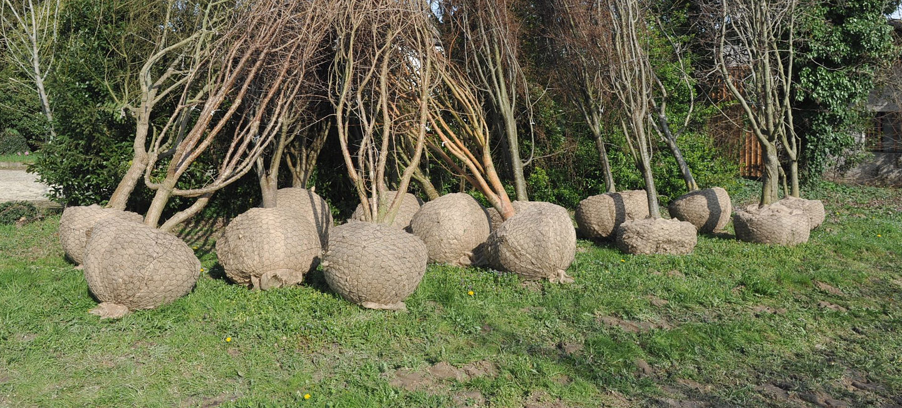
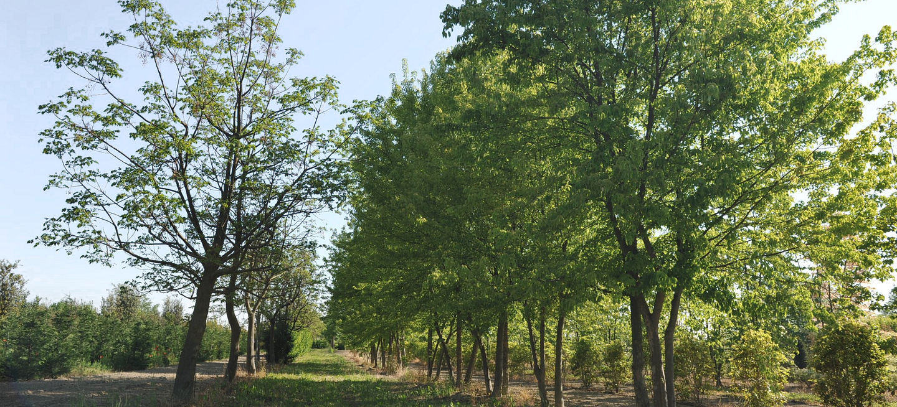
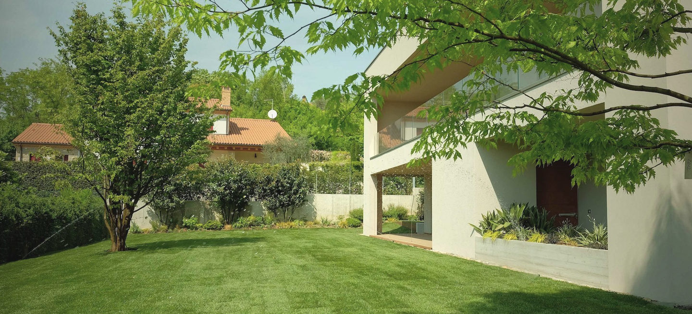
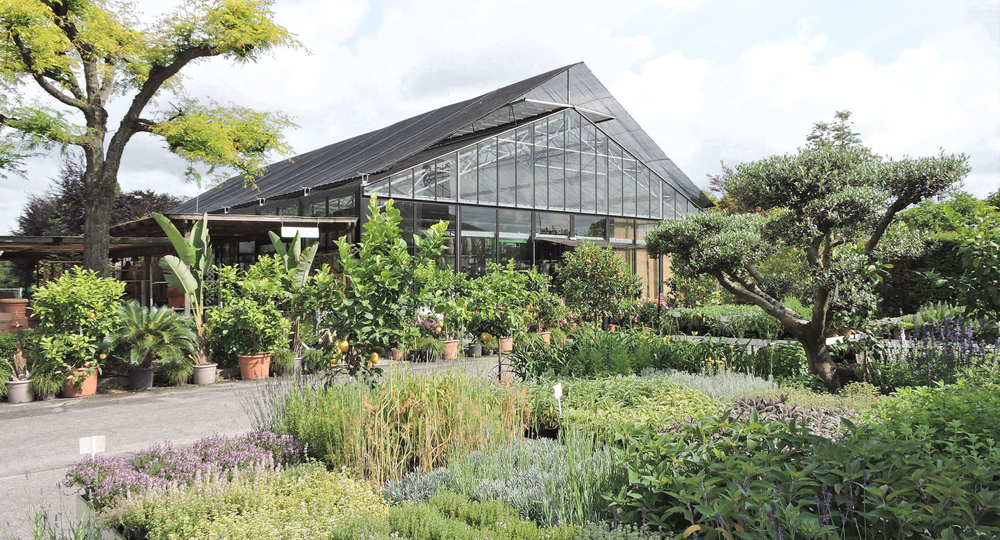
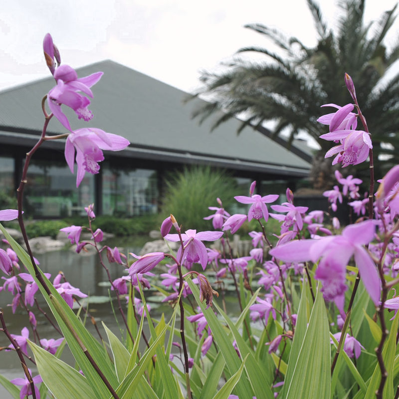

Produciamo
natura dal 1955
Vivaio di piante ornamentali, garden center e giardini chiavi in mano. La famiglia Bordin, in via dei Vivai a Saonara, a due passi da Padova.
Garden, via dei Vivai 6 Indicazioni

Tre mestieri sulla stessa strada
Nel 1955 i fratelli Saverio e Alcide fondano i Vivai Piante Bordin: prima piante da frutto e rose, poi piante ornamentali. Nel 1996 apre il Garden, uno dei primi garden center di Padova. Oggi in azienda lavora la terza generazione.
Vivai
Piante ornamentali dai piccoli arbusti agli esemplari unici, in zolla o in vaso. Spedizione in tutta Italia, anche dei grandi esemplari.
Via dei Vivai 14La produzione
Garden
La piramide di vetro con piante da interno e da esterno, bonsai, piante grasse, terracotte e arredo per il giardino.
Via dei Vivai 6Il Garden
Giardini
Progetto e realizzazione chiavi in mano di giardini, parchi, terrazze e verde pensile. Trapianti di esemplari, restauro di giardini storici, manutenzione.
33 album di lavoriI giardini realizzati
Dal vivaio al giardino
Gli esemplari crescono nei nostri campi, escono con la zolla avvolta nella rete e vengono messi a dimora da noi, con il progetto e la manutenzione.


In vivaio. Filari di esemplari nei campi, in primavera.
Come nasce un giardino
- 1SopralluogoVeniamo a vedere il terreno, in cantiere.
- 2Proposta e visita in vivaioProgetto e preventivo chiavi in mano; le piante proposte si vedono dal vivo nei nostri campi.
- 3TempiAccettato il preventivo, fissiamo insieme le tempistiche.
- 4ManutenzioneInterventi straordinari per seguire la crescita corretta del giardino.
Tutte le piante dei nostri giardini hanno un anno di garanzia d'attecchimento.
Il Garden, una piramide di vetro dal 1996
Un centro del verde a forma di piramide, a due passi da Padova, con migliaia di proposte da scoprire.
- Piante da interno e da esterno
- Bonsai e accessori
- Piante grasse, anche rare
- Vasi in terracotta
- Arredo per il giardino
- Profumi, detergenti bio e idee regalo

Venite a visitarci
Il Garden e i vivai sono sulla stessa strada, a Saonara, a due passi da Padova.
Garden
049 8791098Via dei Vivai 6, Saonara (PD)
info@bordingarden.it
WhatsApp 350 1376907
- Lunedì
- 15:00–19:00
- Mar–ven
- 8:30–12:30, 15:00–19:00
- Sabato
- 9:00–12:30, 15:00–19:00
- Domenica
- chiuso
Vivai
049 640156Via dei Vivai 14, Saonara (PD)
Lun–ven 8–12 e 14–18 · sabato mattina su appuntamento
